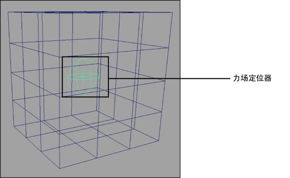

可以创建“力场”(Force Field)约束，以在具有球形体积边界的径向场中将 nCloth 组件或对象推离约束中心。例如，可以通过在关节上放置力场约束，向外推粘在角色的肘部关节的 nCloth。相反，可以使用它吸入或包含约束边界内的 nCloth。
创建“力场”(Force Field)约束
- 选择要约束的 nCloth 或被动对象。
- 选择
 。
。 - （可选）在“创建力场约束选项框”(Create Force Field Constraint Options Box)窗口中，启用“使用集”(Use Sets)以将 nCloth 对象添加到动态约束选择集。
- 单击“创建约束”(Create Constraint)或“应用”(Apply)。
“力场”(Force Field)定位器将显示在选定对象网格的内侧，且 dynamicConstraint 节点显示在“属性编辑器”(Attribute Editor)中。
dynamicConstraint 节点上的预设特性确定约束的类型（在这种情况下为“力场”(Force Field)约束）及其行为方式。例如，可以使用以下属性设置创建“力场”(Force Field)约束：
- “弹簧”(Spring)作为“约束方法”(Constraint Method)
- “全部到第一个”(All to First)作为“组件关系”(Component Relation)
- “组件顺序”(Component Order)作为“连接方法”(Connection Method)
请参见动态约束属性。
- 使用 Maya 的“移动”(Move)、“旋转”(Rotate)和“缩放”(Scale)工具调整“力场”(Force Field)约束的位置、大小和旋转。
定位器的位置、大小和旋转确定力场约束的大小、形状和体积。
- （可选）调整 dynamicConstraint 节点上的“力”(Force)、“强度”(Strength)和“强度衰减”(Strength Dropoff)属性，以确定力场的强度。正值会导致力场向外推 nCloth，而负值会导致力场吸入 nCloth。